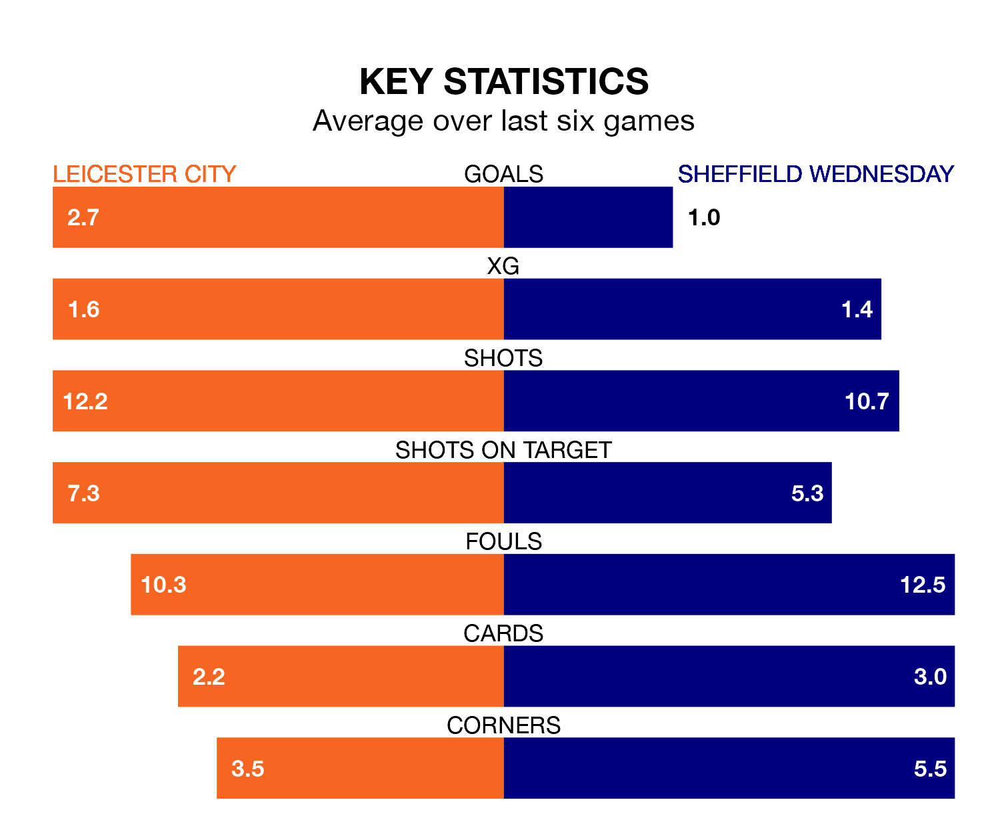

Leicester City host Sheffield Wednesday in Tuesday's late match at the King Power Stadium looking to bounce back from defeat last time out in EFL Championship.
The Foxes, who sit top of the league after 31 games, fell to a 1-2 away defeat to Watford on Saturday.
They face a Wednesday side who picked up a win in their last match, a 2-0 victory against Birmingham City, and who sit 23rd in the table.
With 66 goals in 31 games so far this season, Leicester are the league's highest scorers with 2.1 goals per game. And they are conceding fewer than average, letting in 24 goals at a rate of 0.8 per game.
Wednesday, meanwhile, are below average scorers, with 0.8 goals per game, compared to a league average of 1.4. They have conceded 1.6 goals per game.
With Mads Hermansen between the sticks, City can rely on one of the league's safest pair of hands. He has kept 10 clean sheets in his 30 appearances this season, and only two other 'keepers – West Bromwich Albion's Alex Palmer and Leeds United's Illan Meslier – have been able to prevent the opposition scoring on more occasions in EFL Championship.
In the Owls's net, Cameron Dawson has four clean sheets in 18 games. He has conceded a goal every 58 minutes, more than twice as often as the 142 minutes between goals for Hermansen.
The Foxes are in good form in EFL Championship, with four wins and a draw from their last six games.
With two wins and a draw over that period, the visitors' form is much worse – they have taken seven points from 18, compared to the home side's 13.
Tuesday's match will be refereed by Tom Nield, who has taken charge of six EFL Championship games so far this season, issuing no red cards and booking 24 players. He has awarded one penalty.
He is yet to oversee a match featuring either Leicester or Wednesday this season.
Updated: 09:02 (UTC), 13/02/24